Logros de la Revolución Popular Sandinista 1979-1990
¿Qué país dejó el somocismo?
El somocismo dejó un país empobrecido, desigual, atrasado, dependiente, destruido y saqueado; por eso al triunfar la Revolución se encontró una situación extremadamente dramática
Un reducido número de ricos terratenientes y una gran masa de campesinos sin tierra. En 1970, el 5% de la población nicaragüense recibía el 28% del ingreso nacional, mientras que el 50% de la población recibía solamente el 15% del ingreso, y los niveles intermedios recibían el saldo.
Se evidenciaban grandes divergencias en la distribución del Ingreso, en la tenencia de la tierra, en la educación y en los indicadores básicos de la calidad de la vida. El 2% de las fincas, ocupaban el 40% de toda la tierra arable, mientras el 50% de las fincas, ocupaban solamente el 3.4% de la tierra arable. Las escuelas secundarias se encontraban ubicadas en las ciudades y en vista de que la mayoría de las clases desposeídas se encontraban en el sector rural, las escuelas servían a las clases medias y alta.
Durante los años 1971-1975, el 56.8% de los niños nicaragüenses menores de 5 años padecían algún grado de desnutrición. Sin embargo, en 1976, los gastos militares excedían más de tres veces los gastos de salud. Para una población de 2.3 millones, existía una Guardia Nacional con 5.000 hombres, los que llegaron a ser 15.000 en los años siguientes.
Un Gobierno Popular por primera vez en su historia
Con el triunfo de la Revolución Sandinista por primera vez en la historia de Nicaragua se estableció un gobierno popular, del pueblo y para el pueblo.
En Nicaragua se produjo una Revolución verdadera, democrática y popular, capaz de desmantelar una estructura de poder corrupta, e iniciar con sus propios recursos y con la ayuda de pueblos amigos, la construcción de una nueva sociedad.
La Junta de Gobierno de Reconstrucción Nacional (JGRN), publicó el Estatuto Fundamental de la República de Nicaragua, como norma suprema provisional, que derogó las viejas estructuras formales del poder y sentó las bases del nuevo orden institucional. Los poderes Ejecutivo, Legislativo y Judicial pasaron a ser ejercidos por la JGRN, el Consejo de Estado y los Tribunales de Justicia.
Un Nuevo Ejército y una Nueva Policía al servicio del pueblo
La Revolución abolió la Guardia Nacional, que tenía funciones de ejército y policía, y era un instrumento represivo al servicio del imperialismo yanqui y de las clases oligárquicas y burguesas de Nicaragua. En su lugar creó con los guerrilleros y combatientes populares un nuevo Ejército (el Ejército Popular Sandinista) y una nueva Policía (la Policía Sandinista), como instituciones armadas al servicio de la patria y del Pueblo, por primera vez en nuestra historia nacional.
La Junta de Gobierno de Reconstrucción Nacional, creó por Decreto Ejecutivo el Ejército Popular Sandinista, que entró en vigencia en septiembre de 1979, como única fuerza armada de la República, para cumplir las tareas de defensa de la soberanía y la integridad territorial de Nicaragua. Este Ejército patriótico y continuador del EDSN de Sandino, se forjó como tal, enfrentando la agresión yanqui en todos los años 80, defendiendo consecuentemente la soberanía de la Patria, enfrentando a las fuerzas militares contrarrevolucionarias, dirigidas y financiadas por los Estados Unidos. Así como no pudieron derrotar militarmente a Sandino y su EDSN, tampoco pudieron vencer al Ejército Popular Sandinista en los años 80; fue el soporte militar de la Revolución.
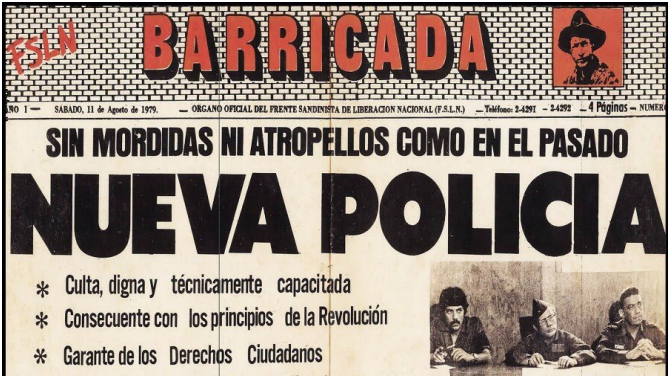Empresas Área Propiedad del Pueblo, Distribución Equitativa de la Riqueza
Otra medida de gran importancia económica durante la Revolución, fue la creación del Área Propiedad del Pueblo (APP), que se conformó a partir de la confiscación de un gran número de empresas que antes eran de Somoza y de los Somocistas que habían hecho grandes capitales a través del saqueo, el robo y la corrupción. El nuevo gobierno, en un acto de justicia histórica y social, las pasó a manos del pueblo y las ganancias eran usadas en su beneficio.
El APP dio ganancias solo para el uso social, que permitió incrementar los programas populares y de desarrollo económico. Dichos programas aumentaron sus actividades en el campo de la salud, la educación, la vivienda y la seguridad social. Se concretaron importantes inversiones en caminos, viviendas, escuelas, hospitales y centros de salud, la mayor parte de los proyectos de inversión se realizaron fuera de Managua, lo que refleja la redistribución nacional del ingreso, garantizando el desarrollo integral de la población nicaragüense.
Educación pública para la liberación social y cultural
Para el año de 1979 el somocismo heredó en asuntos de educación 76.16% de analfabetismo en el área rural y 50.3% en el ámbito nacional. El 35% de los niños en edad de enseñanza primaria (7 a 12 años) no recibía ningún tipo de educación
Los niveles de educación que tenía Nicaragua, al triunfo de la Revolución Popular Sandinista, eran de los más bajos de América Latina, con una educación básicamente elitista y de pocas oportunidades para la mayoría de la población nicaragüense. En los años 80 se produjo una revolución educativa, convirtiendo la educación en un derecho humano fundamental y una garantía para el desarrollo humano y social.
Salud Pública: modelo preventivo y de participación del pueblo
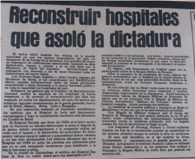El 8 de agosto de 1979 la Junta de Gobierno de Reconstrucción Nacional promulgó una ley en la que se constituía el Sistema Único de Salud, en el que se integraba todas las instituciones médicas del país bajo la dirección del Ministerio de Salud. Al establecer este sistema, el gobierno se comprometía a proporcionar atención médica gratuita a toda la población, a la instalación de hospitales y clínicas en todas las regiones del país y a la implementación de campañas masivas para la erradicación de las enfermedades endémicas y la prevención de las enfermedades epidémicas. Se reconocía que la salud era un derecho de todos los nicaragüenses y una responsabilidad del nuevo Estado Revolucionario y del pueblo organizado. El país fue dividido en nueve regiones para descentralizar los servicios y facilitar la administración sanitaria.
En 1980, la tasa de mortalidad en el primer año de vida infantil se calculaba en 101.7 por 1.000 nacidos vivos. En 1982, esta cifra se había reducido entre 70 a 80 por cada 1.000 nacidos vivos. La razón de este notable descenso en la muerte de los “tiernos” fue la creación, construcción y mantenimiento de las URO (Unidades de Rehidratación Oral), locales accesibles destinados a combatir la deshidratación que provocan en los niños la diarreas prolongadas. Gracias a estos centros de rehidratación, la mortalidad provocada secundariamente por diarreas en los hospitales descendió en un 75%, sobrepasando ya en el primer año la meta que se había fijado el ministerio, que era alcanzar un descenso del 50%.
Tierra para el campesino, con la Reforma Agraria
La Ley de Reforma Agraria tiene sus raíces en las primeras experiencias sandinistas. Sandino comenzó a implementarla formando cooperativas entre los campesinos en el año 1933. Continuar la Reforma Agraria fue un componente substancial del gobierno revolucionario. En el año 1979 la Revolución Sandinista dio a conocer su Programa de Gobierno, y en él se comprometían a hacer una distribución de tierras a los campesinos.
La Ley de Reforma Agraria tiene sus raíces en las primeras experiencias sandinistas. Sandino comenzó a implementarla formando cooperativas entre los campesinos en el año 1933. Continuar la Reforma Agraria fue un componente substancial del gobierno revolucionario. En el año 1979 la Revolución Sandinista dio a conocer su Programa de Gobierno, y en él se comprometían a hacer una distribución de tierras a los campesinos.
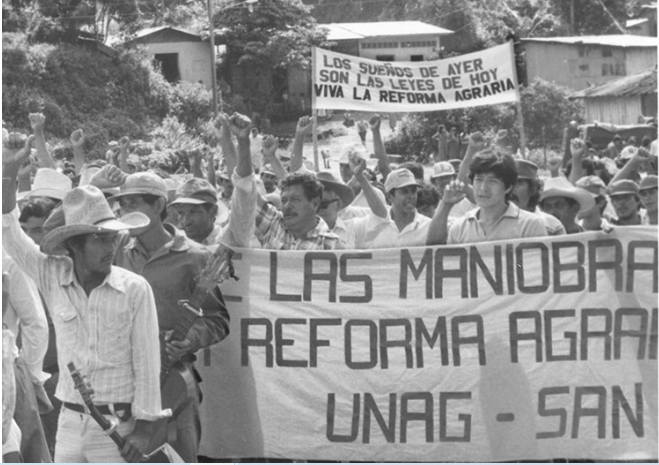La Revolución Sandinista creadora de la Democracia Representativa y Electoral en Nicaragua
Nuevo marco-jurídico-constitucional
El triunfo del 19 de julio de 1979 desmanteló el viejo Estado somocista, dando inicio a la formación de un nuevo Estado que respondiera a los intereses del Pueblo y la Nación. El andamiaje jurídico del nuevo sistema comenzó con la promulgación del Estatuto Fundamental y el Estatuto de Derechos y Garantías de los nicaragüenses; además, se promulgaron otras leyes y decretos, entre las cuales sobresalió la Ley de Reforma Agraria y Decreto de Confiscación a los bienes de la familia Somoza, que permitieron al nuevo gobierno poner en marcha las nuevas políticas del Estado.
Estatuto Fundamental
Fue promulgado el 20 de julio de 1979 por la Junta de Gobierno de Reconstrucción Nacional (JGRN) de la República de Nicaragua, y en él se incorporaron las bases de la nueva organización estatal y los principios cívicos, sociales y populares que la animaban. El Estatuto Fundamental erradicó la Constitución Política de 1974 y las leyes constitucionales del régimen somocista, disolvió las Cámaras de Diputados y del Senado, la Corte Suprema de Justicia y diversos tribunales.
Primeras elecciones libres y plurales en la Historia de Nicaragua en 1984
De acuerdo con el artículo 28 del Estatuto Fundamental, referido a la elección de presidente y vicepresidente, y representantes a la Asamblea Nacional, se llevarían a cabo en la historia política de Nicaragua las primeras elecciones. Los comicios del 4 de noviembre de 1984, fueron la primera expresión de participación pluripartidista en una contienda electoral; a través de estas elecciones el nuevo Gobierno patentizó uno de sus principios, como era el pluripartidismo político.
Con la creación de la Ley de Partidos Políticos, decreto del 2 de septiembre de 1983 y la Ley Electoral del 26 de marzo de 1984, el gobierno sandinista preparó las condiciones de ley para que la sociedad nicaragüense, a través de las diferentes corrientes políticas, hiciera suyo el derecho a participar en las primeras elecciones generales que marcarían de manera irreversible el nacimiento de una nueva cultura política, con la participación amplia de diferentes corrientes políticas y dando término a la tradición electoral de las paralelas libero-conservadoras oligárquicas-burguesas, de derecha y vende patria.
El Gobierno de Estados Unidos trató de impedir estas elecciones, desatando toda una serie de acciones agresivas, militares y políticas; parte de esa política fue desprestigiar el proceso electoral con el objetivo de restarle legitimidad. Sin embargo, el pueblo, de manera soberana, realizó las elecciones más plurales y libres de la historia de Nicaragua.
Luego de los resultados electorales del 4 de noviembre de 1984, cuyo vencedor fue el Frente Sandinista de Liberación Nacional con el 67% de los votos, llevando a la Presidencia al comandante Daniel Ortega.
Los Estados Unidos no dieron muestra de respetar la decisión del electorado nicaragüense y a finales de 1984, con la reelección de Ronald Reagan en la presidencia de Estados Unidos, se daría impulso a una campaña cada vez más fuerte de enfrentamiento armado por derrocar al Gobierno Sandinista.
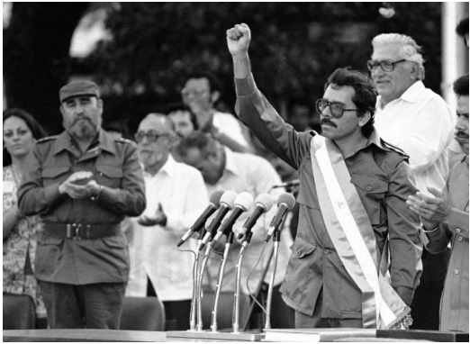La Constitución Revolucionaria de 1987
En 1986 se emprendió una amplia campaña de consulta a la población, acerca de los principales aspectos sociopolíticos que debían considerarse en la elaboración de la nueva Constitución Política, que sería redactada por la Asamblea Nacional constituyente.
Para este proceso de consulta popular, la Asamblea Nacional dirigida por el Comandante Carlos Núñez Téllez, organizó cabildos abiertos en los cuales la población podía expresar sus opiniones sobre qué temas incluir y cómo incluirlos en la Nueva Constitución Política de Nicaragua. Esta participación popular fue promovida a través de las diferentes organizaciones, sectores políticos, económicos y sociales de la población nicaragüense.
Defensa de la Revolución frente la agresión yanqui. ¡No pasarán! ¡No pasaron!
Después del triunfo revolucionario, el gobierno norteamericano se vio obligado reconocer al Estado nicaragüense, lo cual no quiso decir que se resignara a aceptar el triunfo de la Revolución y quedarse con los brazos cruzados, su vocación agresora e imperialista ya desde el gobierno de Jimmy Carter, dio los primeros pasos de agresión contra Nicaragua, que luego fueron continuadas de manera más bélica por Ronald Reagan. El gobierno norteamericano sabía que su arma más efectiva para combatir a la Revolución era la agresión económica, como sucedió entre otras maniobras imperiales, con el condicionamiento de préstamos para Nicaragua.
Otro mecanismo empleado por la política mezquina del imperialismo yanqui, fue el estímulo a los capitalistas nicaragüenses para que sabotearan la economía del país, a través de la descapitalización de las empresas o impidiendo el crecimiento de la producción para debilitar al gobierno revolucionario.
Victoria de Nicaragua en el Derecho Internacional
El 9 de abril de 1984, en el Palacio de la Paz, en La Haya, Nicaragua introducía ante la Corte Internacional de Justicia (CIJ), una demanda en contra de los Estados Unidos de América. Se iniciaba así el juicio más polémico de los conocidos por la CIJ y el más famoso de los ventilados ante un tribunal internacional.
La trascendencia de la acción nicaragüense se debía no sólo al objeto mismo de la demanda, (una política de intervención, de amenaza y uso de la fuerza, caso sin precedentes en la CIJ) sino también a los protagonistas del caso, Nicaragua, y una superpotencia, miembro permanente del Consejo de Seguridad y uno de los artífices de la Organización de las Naciones Unidas, Estados Unidos.
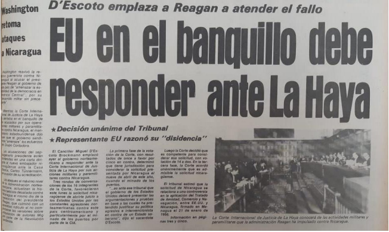Lucha y aportes a la Paz del Gobierno Sandinista 1987-1990.
La lucha por la Paz para detener la agresión de Estados Unidos en Nicaragua y Centroamérica, fue una iniciativa del Gobierno Sandinista encabezado por el Comandante Daniel Ortega desde 1981 hasta 1990.
Ello incluyó las conversaciones de Manzanillo impulsadas por Nicaragua, así como la creación del Grupo de Contadora, el 5 de enero de 1983, una iniciativa de México, Venezuela, Colombia y Panamá, que se propuso crear condiciones para impedir la regionalización del conflicto en Centroamérica y crear condiciones para la Paz, el desarrollo y la democracia. El intenso esfuerzo de Contadora terminó con el Acta por la Paz y la Cooperación en América Central que sólo Nicaragua firmó.
Las Pláticas Diplomáticas de Manzanillo
Después de una sorpresiva visita del secretario de Estado George Schultz a Managua, el 24 de junio de 1983 se iniciaron en Manzanillo, México, negociaciones directas entre ambos gobiernos.
La Revolución Sandinista, considerando que las mayores amenazas a la Paz de la región podían devenir del exacerbamiento de los conflictos militares existentes, esperaba con las pláticas de Manzanillo, la firma inmediata de un acuerdo de no agresión entre Nicaragua y Honduras.
Grupo de Contadora
El proceso de Paz llevado a cabo por Contadora fue tortuoso, cuatro años de gestión (1983- 1987) que produjeron el Acta de Contadora para la Paz en Centroamérica, abordando las áreas políticas, económica, y militar. La exclusión de Washington produjo su injerencia permanente a través de terceros, incluso miembros del Grupo, sobre todo dirigiendo abiertamente la política de los otros cuatro gobiernos centroamericanos en el espíritu de la fallida Comunidad Democrática Centroamericana.
A pesar de todo, Contadora logró que firmaran el Documento de Objetivos, y que participaran hasta la redacción final del Acta de Contadora. Pero cuando el gobierno sandinista declaró públicamente que firmaría el Acta, Washington ordenó a los otros cuatro no firmarla, para frustrar definitivamente el proceso, retomar la hegemonía a favor de la continuación de la guerra en Centroamérica y liquidar por fin la revolución nicaragüense. Casi lo logra, desestimando la capacidad defensiva-ofensiva de la Revolución, en los ámbitos militar y diplomático.
Los Acuerdos de Paz de Esquipulas y el Aporte de Nicaragua (1987-1990)
En términos generales, después del impasse de la iniciativa del Grupo de Contadora, en la ciudad de Esquipulas, Guatemala, el 24 y 25 de mayo de 1986, se reunieron los presidentes centroamericanos: Vinicio Cerezo de Guatemala, José Azcona de Honduras, José Napoleón Duarte de El Salvador, Daniel Ortega Saavedra de Nicaragua y Oscar Arias de Costa Rica, para tratar asuntos regionales y, de manera particular, la seguridad, integridad y la Paz en Centroamérica. En esta primera reunión se sentaron las bases para futuras reuniones que tendrían como finalidad la salida al conflicto. Este primer encuentro de los mandatarios se conoció como Esquipulas I.
Sin embargo, Oscar Arias, entonces presidente de Costa Rica, convoca en San José al Grupo de los Cuatro, todos los países centroamericanos, excepto Nicaragua. (Diaz Lacayo, 2012) Acota: “La limitación fundamental del Plan Arias es que partía de la exclusión de Nicaragua. Su unilateralidad. Dirigido exclusivamente a desmontar la revolución sandinista, sin ningún tipo de compromisos para el Grupo de los Cuatro”.
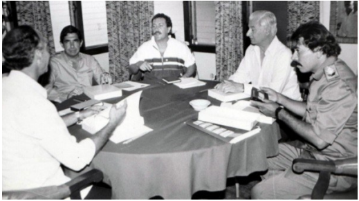Acuerdos de Sapoá: Aportes del gobierno sandinista a la Paz y la Reconciliación
El Gobierno de Nicaragua, en su afán de avanzar en el proceso de Paz, adoptó de manera unilateral medidas que contribuyeron a las negociaciones a lo interno de Nicaragua, entre el Gobierno y la Resistencia Nicaragüense, por medio de los acuerdos de Sapoá.
En las negociaciones de Sapoá se establecen los primeros acuerdos internos encaminados a definir la salida pacífica a la guerra en Nicaragua. En el balneario de Costa del Sol, en El Salvador, los días 13 y 14 de febrero de 1989 se efectuó una cuarta reunión de presidentes centroamericanos; una vez más analizaron los avances del proceso de Paz en Centroamérica y adoptaron decisiones conjuntas en el marco del documento base de Esquipulas II.
Nicaragua: Elecciones de 1990 y el aporte del FSLN a la consolidación democrática y pacífica de Nicaragua
Tras vivir casi una década en conflicto, se preparaban las condiciones para llevarse a cabo las elecciones de acuerdo a la voluntad pacifica de Nicaragua en el marco de los acuerdos de Centroamérica.
Internamente, el país se encontraba con una economía profundamente afectada, con su infraestructura económica casi destruida a consecuencia de la criminal guerra y el bloqueo económico impuesto por el imperialismo yanqui. Además, la sociedad nicaragüense se encontraba altamente polarizada por la guerra impuesta por los Estados Unidos.
En esta situación, la sociedad nicaragüense se preparaba a partir del 24 de abril de 1989 para los comicios electorales del 25 de febrero de 1990. El proceso electoral fue aprovechado por los Estados Unidos, como la alternativa para deponer al Gobierno de la Revolución Sandinista, porque por la vía armada, a través de los Contras, no habían logrado su objetivo.
La información fue extraída de Revolución Popular Sandinista: Avances del Pueblo.
1. FSLN garantiza Transición Pacífica y defensa de las conquistas de la Revolución.
Durante este periodo histórico que duró 16 años, también inició la globalización neoliberal en lo económico, social y cultural, que impuso la reducción drástica de la inversión en programas sociales que la revolución había promovido, así como la privatización de los sectores estratégicos de nuestra economía nacional, las empresas nacionales, los servicios públicos, la salud y la educación, cambios que apuntaban hacia la concentración de la riqueza en pocas manos.
Durante este periodo de tres gobiernos neoliberales, los empresarios tomaron las riendas del poder político en Nicaragua, presionando para provocar el desmonte de los sindicatos, y el abandono estatal de las cooperativas de producción agrícola y de los pequeños productores en el campo. En lo político, se trató de establecer en el imaginario colectivo y en la opinión del pueblo, que la intervención del Estado en la economía era ineficiente y creaba distorsiones a la libertad del mercado, desincentivando el progreso. La satanización de la gestión pública fue su objetivo, para crear una fe ciega en la superioridad del mercado y de la iniciativa privada.
Se trató, en lo cultural, de una ofensiva propagandística que se difundía a través de los medios de comunicación, que promovían fórmulas de vida individualistas que apuntaban hacia el éxito personal, alimentando la desunión entre los trabajadores, con el objetivo de interrumpir entre las clases populares, toda perspectiva de construcción de lo común y de resistencia. Pero nuestro pueblo se mantuvo en pie de lucha, con espíritu combativo durante todo ese periodo.
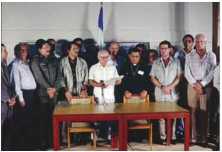2. Características generales de las políticas neoliberales en Nicaragua 1990- 2006
Luego de las elecciones del 25 de febrero de 1990 en Nicaragua, se inició una etapa difícil para la población nicaragüense, fundamentalmente debido a la aplicación de medidas contrarrevolucionarias, es decir, a la puesta en marcha del modelo neoliberal. El neoliberalismo propone la reducción drástica del gasto público, así como el desmantelamiento del Estado, para garantizar la menor intromisión posible de éste en los asuntos de la economía, dejándola en manos de los “actores privados y al libre mercado”.
El neoliberalismo promueve políticas económicas basadas en la fe ciega de la privatización de los recursos estatales, en la reducción en los gastos públicos y la desregulación de la economía, situación que dejó desprotegida a la gran mayoría de nicaragüenses ante las inclemencias del libre mercado.
En Nicaragua, durante los gobiernos neoliberales las desigualdades aumentaron de forma insostenible, los derechos laborales y sociales fueron recortados en nombre del libre mercado. Entre 1990 y 2006, más de 2 millones de personas sufrían pobreza. El 82% de la población, es decir, más de 4.2 millones de personas, seguían viviendo por debajo del umbral de la pobreza y más de 2.1 millones de nicaragüenses malvivían en la indigencia. Estas cifras se dan en el marco de lo que llamaron “estabilización económica del país” pero se da un descenso absoluto, del gasto social y de una caída significativa en la eficacia de su empleo.
3. Gobierno de Violeta Barrios de Chamorro 1990-1996, robo a la República y retroceso social
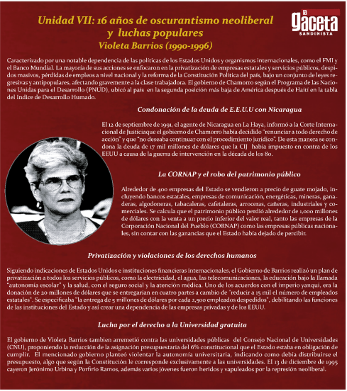I. Inicio de las políticas neoliberales y robo del patrimonio público
Al llegar al poder el gobierno de Violeta Barrios promovió el desmantelamiento del Estado, con el objetivo de saquear a la nación y empobrecer a su población. Los mecanismos utilizados fueron el desmontaje del erario público, la privatización de las empresas y servicios públicos, mandó al desempleo a más de 170 mil trabajadores del sector estatal, el endeudamiento del país, la corrupción de sus funcionarios, el desempleo de los trabajadores y la descapitalización de los productores.
Lo primero que hicieron fue desmantelar la protección arancelaria, eliminando los impuestos a la importación de mercancías competitivas con la producción nacional, lo que dejó desamparado a nuestros productores, beneficiando por supuesto a los importadores y sobre todo a las empresas estadounidenses y europeas, que pudieron invadir nuestra economía con mercancías desgravadas, mientras las empresas nacionales de distintos tamaños, eran desprotegidas, lo que luego condujo a su quiebra y a generar más desempleo.
Hasta 1990 el promedio de imposición arancelaria era de 50%, sin embargo, al final del período neoliberal dicho porcentaje había bajado a 5%. Las actividades que más sufrieron fueron las alimentarias y artesanales. Nicaragua comenzó a ser invadida de alimentos, muebles, zapatos, y otros productos, mientras nuestros productores artesanales comenzaron a resentir fuertemente dicha competencia desleal. A su vez, a las grandes corporaciones transnacionales se les exoneró de todo tipo de impuestos: impuesto sobre la renta, impuesto sobre bienes inmuebles, impuesto al valor agregado, etc. Esta situación contribuyó incluso a la quiebra de muchos productores y empresas nacionales que fueron sustituidas por empresas extranjeras.
II. Privatización y violaciones de los derechos humanos
En cuanto llegaron al poder, los gobiernos neoliberales comenzaron a despedir a cientos de miles de asalariados. Lo primero que hicieron en este sentido fue despedir a 90,000 nicaragüenses de las fuerzas armadas que vivían de su salario. Inmediatamente después despidieron a 50,000 trabajadores de las empresas de las corporaciones estatales, pues tenían que entregarlas libres de sindicatos y prestaciones sociales a los antiguos o nuevos dueños antes de privatizarlas.
De los ministerios despidieron a más de 30,000 empleados, entre ellos a 11,000 maestros, pero el desempleo más masivo se generó en el seno del campesinado y del artesanado, al cortarles el crédito a los pequeños productores del campo y la ciudad. Recordemos que Nicaragua es un país donde los cuenta-propistas son la mayoría de la población laboral. Más de 500,000 campesinos y artesanos se convirtieron de la noche a la mañana en desempleados, semi- empleados o precaristas. Debido a esta situación, muchos campesinos emigraron a la ciudad, otros tantos emigraron a Costa Rica y Estados Unidos. Se calcula que durante todo el periodo neoliberal, el número de nicaragüenses que migraron al exterior por razones económicas, fue mucho mayor al que emigró durante la guerra de los años 80.
En síntesis, en estos años, los ingresos del Estado disminuyeron, los gastos del Estado se destinaron a pagar servicios de la deuda interna (mayormente dirigida a los del gran capital, beneficiario de las millonarias indemnizaciones de la corrupción neoliberal), lo que disminuyó grandemente el monto de los servicios e inversión en educación, salud, electrificación, agua, carreteras, caminos y crédito a los campesinos, etc.
III. Entrega a los intereses yanquis: renuncia a la indemnización por 17 mil millones de dólares
El 17 de septiembre de 1990 el Ministro del Exterior nicaragüense, Enrique Dreyfus, anunció, disimulando entusiasmo (como natural lacayo del imperialismo yanqui), que el día 12 de septiembre, el Gobierno de Nicaragua “había desistido oficialmente de continuar con la demanda presentada por el Gobierno sandinista contra Estados Unidos en la Corte Internacional de Justicia de La Haya”. De hecho, el caso estaba en ese momento en una especie de paréntesis. Tras el histórico fallo de junio de 1986, la Corte había pasado a la etapa de determinar el monto que le correspondía pagar a Estados Unidos en concepto de indemnización por la ilegal conducta y su violación del derecho internacional
Nicaragua había calculado los daños y perjuicios causados por la guerra, en un monto de 17 mil millones de dólares y aun cuando Estados Unidos había ignorado todo el procedimiento, el expediente estaba técnicamente abierto y políticamente representaba una situación irritante para el gobierno Bush, que se venía autoproclamando como el “mayor defensor del derecho internacional”.
Desde hacía meses, los mismos medios de comunicación norteamericanos habían informado que Washington condicionaba la ayuda al gobierno de Violeta Barrios, solo si retiraba la demanda pendiente en la Corte Internacional de Justicia y que ese asunto también “interfería” en el ritmo de los desembolsos de la ayuda ya aprobada.
4. Gobierno de Arnoldo Alemán (1997-2001), continuidad de las políticas neoliberales y la corrupción
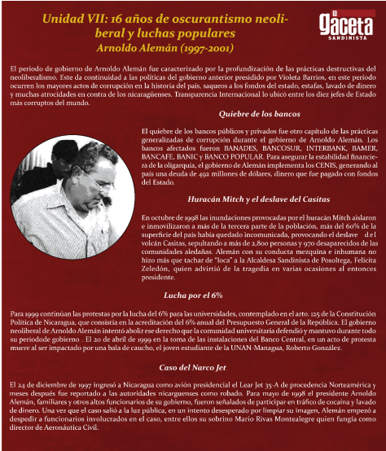El 20 de octubre de 1996 se realizaron las elecciones generales en Nicaragua, en este proceso electoral obtuvo la “victoria” Arnoldo Alemán, estas elecciones tuvieron la particularidad de ser extremadamente fraudulentas. En la madrugada del domingo 20 de octubre, se seguían imprimiendo boletas para las elecciones de Managua en la imprenta INPASA, elegida por el Consejo Supremo Electoral (CSE) para hacer este trabajo tras una tensa polémica.
El alarmante retraso de la imprenta, previsto y anunciado, provocó desórdenes increíbles y constituyó una violación de los plazos de la Ley Electoral y de los términos del contrato que firmó esta empresa con el CSE. En este ambiente de desorden que hubo en todo el país, especialmente notable en Managua, empezaban a asomar por todos lados las irregularidades. Lo único consistente fue el deseo de votar de la inmensa mayoría, la voluntad de participar con los votos para cambiar las cosas y salir de una vez del desgobierno y miseria de los años neoliberales de Violeta Barrios.
La voluntad popular se puso a prueba. La mayoría de las Juntas Receptoras de Votos de todo el país abrieron tarde, por varias razones, todas ellas encadenadas. No fueron puntuales o no llegaron nunca algunos de sus miembros o fiscales, no se recibieron completos y a tiempo los materiales (urnas, boletas, actas). Este retraso fue generalizado, marcando desde la primera hora de los comicios una notable diferencia con las puntualísimas elecciones organizadas por el Frente Sandinista de Liberación Nacional en 1984 y en 1990.
I. Políticas neoliberales de Arnoldo Alemán
El 10 de enero de 1997, llega a la presidencia de la República Arnoldo Alemán, con un programa económico ultra neoliberal, que contemplaba según su gobierno “ambiciosas reformas estructurales”, cuyo objetivo era la destrucción total de las conquistas sociales que la Revolución les entregó a los nicaragüenses en la década de los años ochenta.
El Gobierno de Alemán acordó con el Fondo Monetario Internacional (FMI) y otros acreedores internacionales, la condonación de un 80% de la deuda nacional a cambio de aplicar un ajuste estructural que disminuía el gasto social del país, asimismo, el gobierno de Alemán pretendía liquidar todo lo relacionado a la Reforma Agraria, y devolver muchas de las propiedades confiscadas al somocismo. Además, redujo notablemente el gasto en Educación y Salud, dando continuidad y profundizando las políticas neoliberales del gobierno de Violeta Barrios. De igual modo, durante la administración de Alemán, aumentó el descontento social por la aplicación de medidas que afectaban de gran manera la calidad de vida de los nicaragüenses.
En abril de 1999, el descontento con el gobierno en turno, acusado a diestra y siniestra de incumplir sus promesas, revivió con fuerza en una ola de disturbios y protestas laborales, sobre todo en el sector del transporte, de tal magnitud que el presidente ordenó al Ejército la vigilancia de instituciones y edificios gubernamentales.
II. Inmensa corrupción de Alemán y la cúpula de derecha en Nicaragua
Nicaragua llegó a ocupar en el año 2001 (último año del gobierno de Arnoldo Alemán), el tercer lugar entre los países percibidos como más corruptos en América Latina, según el informe de Transparencia Internacional, dado a conocer el 27 de junio de ese año en París, Francia.
La organización define la corrupción como “el abuso del poder encomendado para beneficio personal”. Entre 1997 y 1999 se publicaron 3,124 denuncias de actos de corrupción. Dichos actos fueron divulgados por su vice presidente Enrique Bolaños, luego que fue Presidente a partir del 2002. Entre los actos de corrupción ocurridos durante la administración de Arnoldo Alemán, son conocidos popularmente como:
III. Tragedia del Huracán Mitch y robo de la ayuda
El huracán Mitch (1998), fue uno de los peores y más devastadores desastres naturales en la historia reciente. Su paso por Centroamérica dejó más de 9,000 muertos y una cifra similar de desaparecidos en cuatro países de la región.
En Nicaragua, el número de muertos tras el huracán llegó a más de 2,800 (según Barricada de la época) y a 970 el de desaparecidos. Las pérdidas económicas ascendieron a 988 millones de dólares, según datos de la Comisión Económica para América Latina y el Caribe (CEPAL). La tragedia marcó un antes y un después en la historia de nuestro país.
Sin embargo, el Mitch no solo generó la pérdida de dinero y vidas humanas. Representó además uno de los capítulos más negros en la historia nacional, por la corrupción en el manejo de los recursos financieros donados por la cooperación internacional para la atención del desastre y la recuperación del país.
5. Gobierno de Enrique Bolaños, continuidad neoliberal y más corrupción
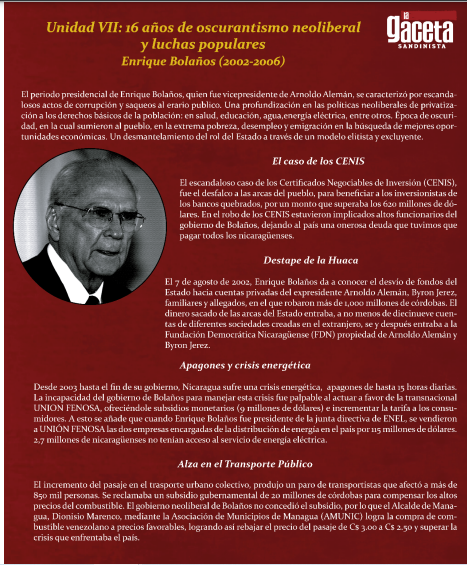I. Los CENIS y el destape de la Huaca, 2000-2002
Durante el gobierno de Enrique Bolaños (2002-2006), las políticas económicas neoliberales continuaron, políticas basadas en la fe ciega de la privatización de recursos estatales, reducción en los gastos públicos y desregulación en general; crearon un infierno de laissezfaire para la gran mayoría empobrecida. La “nueva era”, prometida por Enrique Bolaños no se produjo, y solo continuó con el infierno neoliberal iniciado por doña Violeta y seguido por Alemán.
En ese contexto se destapa los actos de corrupción del gobierno de Arnoldo Alemán, entre ellos el escándalo de los Certificados Negociables de Inversión (CENIS), que fueron emitidos de forma muy turbia y poco clara para la opinión pública, y se puede afirmar que hubo complicidad por parte de funcionarios del gobierno de Alemán, que en ese tiempo representaban los entes reguladores como por ejemplo: Contraloría General de República, Ministerio Público, Superintendencia de Bancos y de Otras Instituciones Financieras (SIBOIF).
II. Bolaños y la Privatización de la Salud pública y la crisis energética 2003-2006
Para Nicaragua, como para los demás países empobrecidos de América Latina, la crisis de la deuda externa significó condicionar su economía a los intereses extranjeros y la adopción de medidas neoliberales, entre éstas: la disciplina fiscal y reorientación del gasto público: reducción del gasto social en áreas sensibles como Salud y Educación.
En Nicaragua el sistema de Salud pública fue desmantelado por el régimen neoliberal, promoviendo la privatización de los hospitales. Esta medida criminal afectó a las familias más pobres de Nicaragua, y sobre todo se violentó el derecho humano que posee todo ciudadano nicaragüense a ser atendido con calidad y responsabilidad, a fin de garantizar una mejor calidad de vida para todos y todas.
III. Crisis energética, 2003-2006
La crisis de los apagones en Nicaragua durante el gobierno neoliberal de Enrique Bolaños, ocurrió debido a la incapacidad de la gestión de su gobierno. Cuando Bolaños fue vicepresidente de Arnoldo Alemán, fue también presidente del INE, (ente estatal regulador de todo el sistema energético nacional), desde ese cargo sólo promovió la privatización de la distribución de la energía, a favor de la transnacional Unión Fenosa y la privatización de varias de las empresas generadoras.
Durante los siguientes cinco años, ya como presidente, no hizo nada para articular responsablemente el sistema energético del país, ni para comenzar a superar la altísima dependencia de Nicaragua con el petróleo y sus derivados para generar energía. Proyectos energéticos eólicos, hidroeléctricos o geotérmicos, listos para ponerse en marcha y con viabilidad económica, no fueron promovidos.
IV. Alzas en el transporte urbano colectivo
Otro de los agudos problemas del periodo neoliberal, fue el incremento de las tarifas del transporte público, por los altos precios del petróleo y la ineficiencia del gobierno de Enrique Bolaños en la búsqueda de su solución. La población nicaragüense se vio afectada por la aplicación de los transportistas de un incremento arbitrario en el pasaje urbano. Así, el año 2006 inició con paros de transporte que afectaron a más de 850 mil usuarios de Managua.
Los transportistas reclamaban un subsidio gubernamental de 20 millones de córdobas para compensar los altos precios del combustible o que les autorizaran un alza de 14 centavos de dólar en el precio del pasaje. Luego de una semana de paro, no había aún una solución a la problemática y se reportaban heridos y detenidos por enfrentamientos entre los transportistas y la Policía Nacional. El 14 de febrero de 2006, los transportistas y el Ejecutivo llegaron a un acuerdo.
6. Oposición constructiva del FSLN y luchas populares contra el neoliberalismo
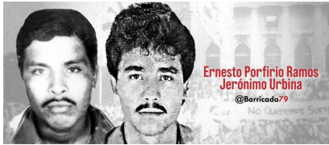I. Oposición constructiva del FSLN durante los gobiernos neoliberales
El 25 de febrero de 1990, se abrió una nueva etapa histórica para Nicaragua, la nueva fase significó luchar cada día defendiendo las conquistas revolucionarias, desde aquel histórico discurso del Comandante Daniel, en la plaza de los No Alineados, que marcó la continuación de la Revolución bajo nuevas circunstancias y nuevos retos.
En 1990, las cosas eran diferentes, desde el punto de vista político, ser oposición y gobernar desde abajo, significaba generar las condiciones para la unidad de la clase trabajadora, como protagonista en las decisiones del país y presente en los espacios institucionales de toma de decisiones.
El FSLN acompañando las luchas populares
La lucha de los trabajadores
Desde que Nicaragua se sometió en 1992 a las condiciones del FMI y el Banco Mundial, se estableció una política de drástica restricción de la inversión pública en salud y educación. Algunas de las variables más importantes sobre la que recayó esta política de draconiana restricción del gasto en educación y salud, fue el “congelamiento” de los salarios de maestros y trabajadores de la salud, así como la severa reducción en las asignaciones para comprar medicamentos, para reparar y mantener escuelas y centros de salud.
El congelamiento de los salarios nominales de maestros y trabajadores de la salud se reflejó en una ostensible reducción de sus salarios reales desde 1992 hasta 1997. A partir de 1997 se inició un modesto y tortuoso proceso de recuperación salarial de estos dos sectores, gracias a las luchas que emprendieron sus gremios desde los inicios de los gobiernos neoliberales y que continuaron a lo largo de la década de los años 90. Ejemplo de esto ocurrió el 9 de junio de 1998, cuando después de 125 días de paros, manifestaciones y huelgas, y tras más de 45 reuniones de negociación con el gobierno neoliberal de Arnoldo Alemán, más de 3,800 médicos lograron un reajuste salarial significativo gracias al apoyo que brindó el FSLN y FETSALUD.
La lucha de los Universitarios
Protestas por el derecho a una universidad gratuita, 6% constitucional 1995-2002
Desde finales de 1991, la comunidad universitaria nicaragüense inició su reclamo por el 6% y la defensa de la Autonomía. Esta lucha enfrentó también una gran campaña de propaganda por parte del gobierno de Violeta Barrios de Chamorro, que pretendió manipular a la población, usando datos falsos para tratar de detener el masivo apoyo a la causa de los universitarios
Después de movilizar a miles de nicaragüenses a favor de la causa universitaria, derrotar la campaña de mentira del gobierno y presionar a los diputados, se logró la Interpretación Auténtica de la Ley 89, efectuada por la Asamblea Nacional el 19 de agosto de 1992, dejando claramente establecido que el 6% debía calcularse y garantizarse en base al “total de ingresos ordinarios y extraordinarios establecidos en el Presupuesto General de la República para el año correspondiente, independientemente del origen de dichos ingresos”.
Lucha contra la privatización de la educación y respaldo a los educadores
Acceso nulo a la educación para los hijos de los pobres y campesinos
Durante la etapa de los gobiernos neoliberales, se aplicó “un nuevo modelo de educación”, que buscaba privatizar la educación transfiriendo a los padres de familia, a los docentes y a la comunidad educativa, una amplia cuota de responsabilidad en el manejo del sistema educativo y en la administración de las escuelas, a través de la llamada “Autonomía Escolar”.
Se trataba de la privatización de la educación, con el objetivo de excluir a los hijos de los obreros y campesinos al acceso a la educación gratuita y de calidad, tal como lo establece la constitución. Con la Autonomía Escolar se intentó desmantelar la confianza del pueblo en el sistema escolar público, violentando con esto, los derechos fundamentales del pueblo de Nicaragua.
Lucha contra la privatización de la salud y en favor de los trabajadores de salud
Anterior a las medidas neoliberales, en Nicaragua, la población no pagaba ni un solo centavo por los servicios de salud, pues el proceso revolucionario sandinista garantizaba la gratuidad de este derecho, tal como lo establece la Constitución, pero a partir de 1990 el FMI, junto con el gobierno de Violeta Barrios dispusieron que fuese privatizado todo el sector de salud en nuestro país.
La justificación de estos gobiernos fue que el pueblo nicaragüense no pagaba los suficientes impuestos y que el Estado tenía que pagar la deuda externa e interna de Nicaragua y que la única medida razonable era disminuir el gasto del sector salud. Esto a la vez provocó la disminución de los salarios del personal médico y auxiliar que trabajaban en los hospitales de nuestro país.
La información fue extraída de Historia de Nicaragua: 16 años de oscurantismo neoliberal.